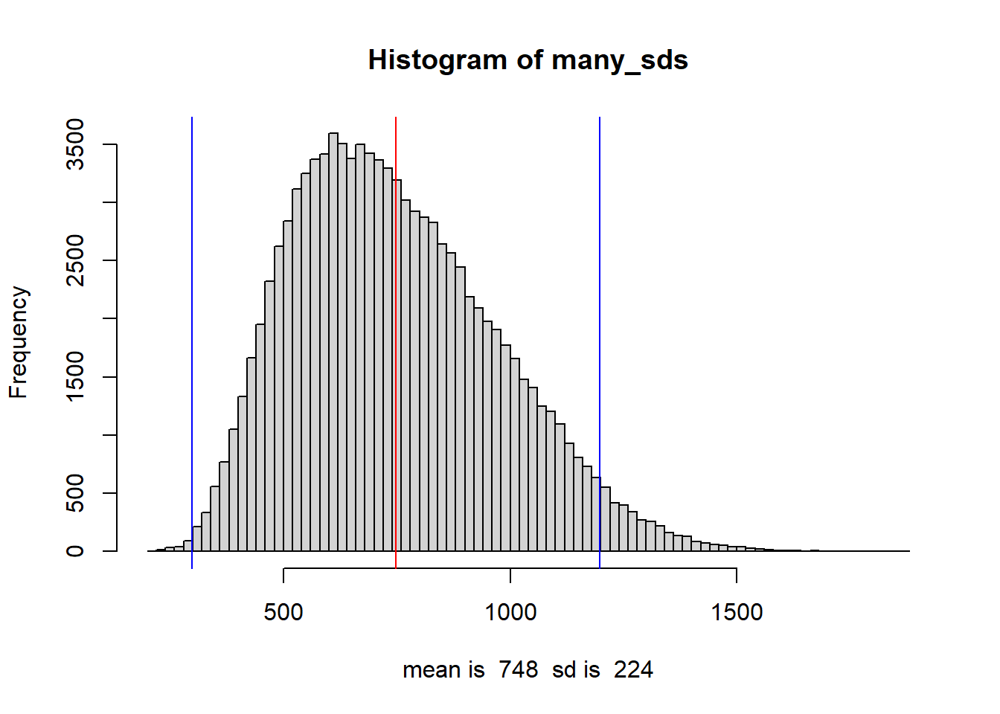
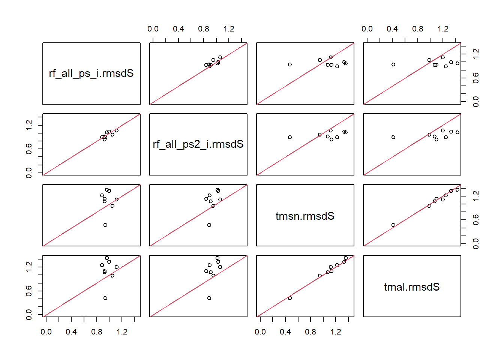

Obviously, we want to reduce rmsd. However, rmsd alone tells me nothing. I think the difference is the y values of the nearest neighbor to each reference plot minus the y values of that plot. RMSD is then the sum of squared differences divided by n. So for total_TD, rmsd is average difference in the number of total trees. When I ran the errorStats in impuation 2, msn.rmsd for PSME without zeroes was 261, with zeroes it was 265. When I ran the imputation, it was on the full set of data without subsetting a reference set. So, the difference is between all plots and the nearest 10 plots. I am pretty sure setting k to 10 makes it average each y variable.
On average, there were 4 more or less PSME in the targets vs references when comparing imputations with and without zeroes. However, both sets were on average different by about 263 trees. There is more variation between plots than there is between imputations.
For the same two sets of imputations, total_TD was 757 & 803. On average, the imputations were different by 46, but the plots were different by 775. That is a lot of trees, too many in my opinion. I don’t know enough about forestry to really say, but reasonable TPAs for non-seedlings is between 300 and 900. Having a difference in seedlings that high may be normal, but I can’t say and it doesn’t seem normal.
I could try and figure out an appropriate metric based off the mean and sd. In the set imp_zx, there are on average about 64 PSME seedlings on plots that have an over story. Standard deviation is about 225. These data are almost distributed exponentially. A log transformation doesn’t make it normal. I cannot figure out how to deal with the distribution. So, I am going to treat it as if it were. I could try and bootstrap the mean and sd. That would at least smooth out the oddballs.
Bootstrapping it may have been a waste of time. For the full dataset, On average total_TD is 364 trees per acre plus or minus 64. 95% confidence interval is between 300 and 428 TPA. SD 95% is between 300 and 1194. So, we will get negative numbers often. For the subset without numbers over 10k and w/o zeroes, Without the outliers and zeroes, mean trees are 652 trees plus or minus 31. The true sd is 975 plus or minus 73.
So, there is too much variation in the whole set for anything to really make sense. I do not know how to model a log-normal distribution problem. I do not want zero in the confidence intervals. I can’t find anything straightforward about modeling this problem. It isn’t really an exponential distribution. The log transformations aren’t perfect.
All that being said, I think it is time that I got a little bit more info about RF. The variability issue could be fixed within RF. I would like to subset the data an dlook at variability within fpags, but I think RF will do well enough. I can go back and check a sampling of them, if I want to.
yaImpute
Paper I’ve spent so much time trying to understand the stage and Crookston error stats paper. That time wasn’t a waste, but it isn’t how error works for random forests. In random forests, observation s are condsidered similar if they tend to end up in the same terminal node (in a suitably constructed collection of classification and regression trees.) Liam & Wiener, p.18
In RF, distance is based on a proximity matrix. There is a col and row for every observation. Inside the matrix is the number the proportion of trees where “plots” are in the same terminal node.
That matrix is too big though so the package uses an n by n_tree matrix. There are two, one for the references and one for the targets. For multivariate Ys, there is a separate forest for each Y. The node matrices for wach Y are joined at the end.
rmsd can never be zero. Notably distant finds references that aren’t as close as others. They are outside the range of variation of the references or they fall in large gaps. Specify a threshold distance by visualizing the frequency distribution. Hold the treshold constant when adding new data to fill the gaps.
yaiVatImp is for variable importance.
rfSUmmary builds summary data.
Setup
Code
# Data tidying and accesslibrary(tidyverse, quietly = T)library(RSQLite)# library(readxl)# library(writexl)# yaImpute and related library(yaImpute)library(vegan)library(randomForest)# plots and tableslibrary(esquisse)library(knitr)# No sci-notation. options(scipen =999)
Setup yai
Code
KEEP <-c("KEEP")rm(list =ls()[!ls() %in% KEEP])# Pulling from my new interim save pointcon <-dbConnect(RSQLite::SQLite(), "./attempt_032524.db")imp_data <-dbGetQuery(con, "select * from imp_data")zimp_data <-dbGetQuery(con, "select * from regen_only_imp_data")plots <-dbGetQuery(con, "select * from fvs_plotinit_plot")plants_ref <-dbGetQuery(con, "select * from plants_ref")dbDisconnect(con)rm(con)# sp_prev was saved from imutation 1load("sp_prevalence.Rdata")imp_data_FPA <- imp_data |>mutate(fpa =str_sub(FPAG, 1, 3) )imp_data_FPA <- imp_data_FPA |>mutate(common =rowSums(imp_data_FPA[,sp_prevalence$common]),uncommon =rowSums(imp_data_FPA[,sp_prevalence$uncommon]),rare =rowSums(imp_data_FPA[,sp_prevalence$rare]),total_TD =rowSums(imp_data_FPA[grep("_TD", names(imp_data_FPA))])) |>select(-sp_prevalence$rare, -sp_prevalence$uncommon, -sp_prevalence$common)imp_data_FPA <- imp_data_FPA |>relocate(fpa, .after = FPAG)# I am removing the extra rows to speed up the imputation test. fpas <- imp_data_FPA |>filter( total_TD >0 )# refs <- rownames(fpas[1:(3*nrow(fpas)/4),])# # x <- fpas |> select(1:5)# x <- remove_rownames(x)# x <- column_to_rownames(x, "STANDPLOT_CN")# # yfull <- fpas |> select(1, 7:ncol(fpas))# y <- yfull[refs,]# y <- remove_rownames(y)# y <- column_to_rownames(y, "STANDPLOT_CN")# yfull <- remove_rownames(yfull)# yfull <- column_to_rownames(yfull, "STANDPLOT_CN")# # k = 10# # yrf <- cbind(whatsMax(y[ ,1:(ncol(y)-1)]), y[, ncol(y)])# # names(yrf) <- c('Max_SP', 'sp_max_TD', 'total_TD')# Removing the fpas with less than 120 plots. t <- fpas |>group_by(FPAG) |>summarise(n =n()) |>arrange(desc(n)) |>filter(n >120)keep <- t$FPAGt2 <- fpas |>filter(FPAG %in% keep)t2$FPAG <-as.factor(t2$FPAG)
Run yai
I am tires right now, but this section looks weird Double check the imputation I have been doing for trf and check the above code.
I noticed at levels argument to msn in the yaImpute webstie, There may still be away to get that to work. It’s not really important right now because we have mostly decided to go with random forests.
The warning about zero distances is in reference to plots that have the same predictors. For example, if two or more plots share cc = 1, ba = 2, sdi = 10, they are separated by zero distance. Given the way this data was made, I am surprised that there aren’t more sets with the same predictors.
Here, I was trying to figure out some code to pull the sets of data with zero distance between predictors out of the data. The correct answer was to use unique on the set of predictors after setting standplot_cn to rownames.
Code
# 527 zero distances of 1884imp_zx <- imp_data_FPA |>filter(CC !=0& BA !=0& SDI >1)# 40 zero distances. It isn't in the ancillary data, but that did help.imp_zx <- imp_zx |>filter(total_TD >0)# 15imp_zx <- imp_zx |>filter(CC >1& BA >1& SDI >1)imp_zx <- imp_data_FPA |>filter(CC != BA & CC != SDI & BA != SDI)imp_zx <- imp_data_FPA |>filter(!near(CC, BA, tol = .01) &!near(CC, SDI, tol = .01))
Of the 1884 zero distances:
All but 15, of the zero distances are where CC, BA, and SDI are all less than one.
All but 40 are accounted for in the set where total tree density is zero.
This is the code to run the imputation as usual, with all the data.
It gives the errors, 1884 zero distances of 24621 references were set to 0.0…
imp_ztest <- imp_data_FPAX <- imp_ztest |>select(STANDPLOT_CN, CC, BA, SDI)X <-remove_rownames(X)X <-column_to_rownames(X, "STANDPLOT_CN")Y <- imp_ztest |>select(STANDPLOT_CN, PSME_TD, common, total_TD)Y <-remove_rownames(Y)Y <-column_to_rownames(Y, "STANDPLOT_CN")mal <-yai(x = X, y = Y, method ="mahalanobis", k = k)msn <-yai(x = X, y = Y, method ="msn", k = k)ewz <-errorStats(mal, msn)scaled_ewz <-errorStats(mal, msn, scale = T)
Here I am extracting the plots where there is zero distance in the predictors from the yai object, then joining the imputation data to those plots.
# msn$neiDstRefs rows of references with the distance to k neighbors## This run is had everything as a reference. msn_0dist <- msn$neiDstRefs |>as.data.frame()# Selecting only distances for the k = 1 neighbor. msn_0dist <- msn_0dist[msn_0dist$Dst.k1 ==0,]# Getting the cns of those NN. msn_0dist$STANDPLOT_CN <-row.names(msn_0dist)cns_0d <- msn_0dist |>select(STANDPLOT_CN)# Joining the imp data to the zero dist NNtest_all0s <-left_join(cns_0d, imp_ztest, by ="STANDPLOT_CN")test_all0s |>arrange(desc(BA)) |>head()
The above data frame shows that the zero distances are where the 3-D vector of
predictors overlap. Adding more predictors would help.
I will now run the imputation data without those zero dist. NN.
This code runs the distance matrices without zero distances by using unique().
imp_ztest <- imp_data_FPAb <-nrow(imp_ztest)# selecting predictors onlyX <- imp_ztest |>select(STANDPLOT_CN, CC, BA, SDI)# Moving cns to get unique predictorsX <-remove_rownames(X)X <-column_to_rownames(X, "STANDPLOT_CN")X <- X |>unique()a <-nrow(X)# Before and after uniqueb
[1] 24621
a
[1] 22969
print(str_c("before minus after unique = ", (b-a)))
[1] "before minus after unique = 1652"
# Finding cns where predictors are uniquex <- X x <-rownames_to_column(x, "STANDPLOT_CN") |>select(STANDPLOT_CN)# Filtering out the zero distances. imp_zx <-left_join(x, imp_ztest, by ="STANDPLOT_CN")# Selecting ancillary data. Y <- imp_zx |>select(STANDPLOT_CN, PSME_TD, common, total_TD)Y <-remove_rownames(Y)Y <-column_to_rownames(Y, "STANDPLOT_CN")tY <- imp_zx |>select(STANDPLOT_CN, PSME_TD, ABLA_TD, ABAM_TD, TSHE_TD, common, uncommon, rare, total_TD)tY <-remove_rownames(tY)tY <-column_to_rownames(tY, "STANDPLOT_CN")mal <-yai(x = X, y = Y, method ="mahalanobis", k = k)msn <-yai(x = X, y = Y, method ="msn", k = k)tmal <-yai(x = X, y = tY, method ="mahalanobis", k = k)tmsn <-yai(x = X, y = tY, method ="msn", k = k)ewoz <-errorStats(mal, msn)scaled_ewoz <-errorStats(mal, msn, scale = T)KEEP <- KEEP |>append(c("tmsn", "tmal"))
mal.see
mal.rmmsd0
mal.mlf
PSME_TD
221.8865
151.03480
194.4938
common
477.7440
621.49559
187.3791
total_TD
842.9472
71.48992
841.4301
mal.rmsd
mal.rmsdlg
mal.sei
mal.dstc
PSME_TD
321.9114
398.3118
303.6794
284.2806
common
523.8155
596.5675
285.0513
NA
total_TD
428.8956
534.1788
425.9061
422.8955
msn.rmsd
msn.rmsdlg
msn.sei
msn.dstc
PSME_TD
261.1057
330.3856
238.2654
212.9898
common
575.4805
679.7284
371.5500
NA
total_TD
756.9970
944.6343
755.3073
753.6138
Of the 1884 zero distances of 24621 references in the original data, 1652 of those rows were not unique.
t <- test_all0s |>mutate(t =round(CC + BA + SDI, 4))hist(t$t, breaks =209)
Distribution of t, the sum of CC, BA, and SDI. Trying to see where the values of matching matching vectors exist. Most of the overlap is below 10 and zero. Meaning the values of CC + are low.
t2 <- t |>filter(CC ==0& BA ==0& SDI ==0)# tt <- t |> filter(CC != 0 & BA != 0 & SDI != 0)t <- t |>filter(t>0)n_distinct(t$t)
[1] 224
hist(t$t, breaks =50)
There are 224 distinct values (above zero) on 1205 plots. The rest of the 1884 plots were zero across the board, no BA, no trees in the over story or seedlings.
t3 <- t |>group_by(t) |>summarise(n_plots_per_t =n()) |>arrange(desc(n_plots_per_t)) # summary(t[t$t < 1, c(1:4, 14:15)])kable(summary(t[t$t <1, c(1:4, 14:15)]))
STANDPLOT_CN
CC
BA
SDI
total_TD
t
Length:591
Min. :0
Min. :0.004089
Min. :0
Min. : 74.97
Min. :0.00410
Class :character
1st Qu.:0
1st Qu.:0.004089
1st Qu.:0
1st Qu.: 74.97
1st Qu.:0.00410
Mode :character
Median :0
Median :0.008177
Median :0
Median :149.93
Median :0.00820
NA
Mean :0
Mean :0.012418
Mean :0
Mean :227.69
Mean :0.01243
NA
3rd Qu.:0
3rd Qu.:0.016355
3rd Qu.:0
3rd Qu.:299.86
3rd Qu.:0.01640
NA
Max. :0
Max. :0.040887
Max. :0
Max. :749.65
Max. :0.04090
In the set of 1205 where the combined preds are above zero and less than one, there are 591 plots and only BA has values.
# The number of rowsnrow(t[t$t <1, c(2:4, 14:15)])
[1] 591
The number of rows between 0 and 1 is 591.
# head(t3, n = 10)kable(head(t3, n =10))
t
n_plots_per_t
0.0041
230
0.0082
96
0.0123
64
0.0164
54
0.0204
51
0.0245
32
0.0286
25
0.0327
18
0.0368
11
1.0450
11
There are 230 plots where t == 0.0041. 0.0368 & 1.0450 both have 11 plots. For each set of t’s that match, like 0.0368 & 1.0450, there are n_ts_per_nplots.
plot(t3$n_plots_per_t, t3$t)
The majority of zero distances plots only share a small number of values.
tt <- t3 |>group_by(n_plots_per_t) |>summarize(n_ts_per_nplots =n()) |>mutate(n_that_match = n_ts_per_nplots * n_plots_per_t) |>arrange(desc(n_that_match))head(tt, n =10)
n_plots_per_t
n_ts_per_nplots
n_that_match
2
128
256
230
1
230
3
38
114
96
1
96
4
20
80
5
15
75
64
1
64
54
1
54
51
1
51
6
7
42
sum(tt$n_that_match)
[1] 1205
There are 256 plots that match 2 times, on 128 different values of t.
There are 230 plots that match 230 times, on 1 value of t.
df <- t |>filter(t ==0.0041)summary(df)
STANDPLOT_CN CC BA SDI
Length:230 Min. :0 Min. :0.004089 Min. :0
Class :character 1st Qu.:0 1st Qu.:0.004089 1st Qu.:0
Mode :character Median :0 Median :0.004089 Median :0
Mean :0 Mean :0.004089 Mean :0
3rd Qu.:0 3rd Qu.:0.004089 3rd Qu.:0
Max. :0 Max. :0.004089 Max. :0
FPAG fpa PSME_TD ABLA_TD
Length:230 Length:230 Min. : 0.00 Min. : 0.000
Class :character Class :character 1st Qu.: 0.00 1st Qu.: 0.000
Mode :character Mode :character Median : 0.00 Median : 0.000
Mean :14.67 Mean : 6.193
3rd Qu.: 0.00 3rd Qu.: 0.000
Max. :74.97 Max. :74.965
ABAM_TD TSHE_TD common uncommon
Min. : 0.000 Min. : 0.0000 Min. : 0.00 Min. : 0.00
1st Qu.: 0.000 1st Qu.: 0.0000 1st Qu.: 0.00 1st Qu.: 0.00
Median : 0.000 Median : 0.0000 Median : 0.00 Median : 0.00
Mean : 1.956 Mean : 0.3259 Mean :34.22 Mean : 8.80
3rd Qu.: 0.000 3rd Qu.: 0.0000 3rd Qu.:74.97 3rd Qu.: 0.00
Max. :74.965 Max. :74.9653 Max. :74.97 Max. :74.97
rare total_TD t
Min. : 0.00 Min. :74.97 Min. :0.0041
1st Qu.: 0.00 1st Qu.:74.97 1st Qu.:0.0041
Median : 0.00 Median :74.97 Median :0.0041
Mean : 8.80 Mean :74.97 Mean :0.0041
3rd Qu.: 0.00 3rd Qu.:74.97 3rd Qu.:0.0041
Max. :74.97 Max. :74.97 Max. :0.0041
Of those 230 that share one value of t, there is no variation in predictors. There is variation at the species level, but not at the total tree level. These three predictors seem to be good at predicting the total tree density, but not the species present.
Following are comparisons between the yai objects and distances for a yai with zeros and one without.
For mahalonobis (read as euclidian distance), the yai without zeroes was higher in all categories except for common trees standard error of imputation. I don’t know why the distance component is NA.
msnw |>arrange(source)
source
msn.rmsd
msn.rmsdlg
msn.sei
msn.dstc
PSME_TD
264.9361
285.4914
247.1212
227.9180
PSME_TD_wo0
261.1057
330.3856
238.2654
212.9898
common
625.0536
676.6855
593.8624
560.9394
common_wo0
575.4805
679.7284
371.5500
NA
total_TD
803.3972
869.4654
803.3972
803.3972
total_TD_wo0
756.9970
944.6343
755.3073
753.6138
For msn (canonical correlation) without zeros was generally lower, except root mean square error of the observations with larger distances (rmsdlg) and common trees SEI.
commonw |>arrange(source)
source
mal.see
mal.rmmsd0
mal.mlf
PSME_TD
215.3464
135.0722786
193.0073
PSME_TD_wo0
221.8865
151.0348025
194.4938
common
466.4442
275.7514975
423.7343
common_wo0
477.7440
621.4955878
187.3791
total_TD
819.0953
0.0000003
819.0953
total_TD_wo0
842.9472
71.4899191
841.4301
For the common stats that are used to compute the others, model lack of fit is much better for common trees. There is also an expectedly large difference for rmsd near 0. rmmsd0 is a measure of variability, pure error, measurement error, and bias. Bias is the squraed average distance compoents in that group.
This was a test to see what they look like when scaled.
With zeroes
Without zeroes
mal.see
mal.rmmsd0
mal.mlf
PSME_TD
0.9878199
0.6195928
0.8853476
common
0.9762440
0.5771339
0.8868543
total_TD
0.8234868
0.0000000
0.8234868
mal.see
mal.rmmsd0
mal.mlf
PSME_TD
0.9872021
0.6719737
0.8653286
common
0.9756580
1.2692303
0.3826693
total_TD
0.8230136
0.0697994
0.8215324
yaImpute model evaluation
For each set, the total_TDs are the same. That is interesting. Explore the tree values for combinations of cc, ba, and sdi. Do the predictors do well at finding total td, but not per species.
Performance based approaches select variables based on changes in the prediction accuracy when variables are added or deleted from models, and include methods by Svetnik and Jiang, varSelRF, caret, RRF, SRC and VSURF.
They are using area under the curve as an indicator of fit/performance.
Regular RF had the highest OOB error rate. I think that yaImpute uses regular RF.
Jiang looks worth checking out. SVETNIK too. These two performed best for error, comp time, and accuracy.
kable(scaled_ewz$mal)
mal.rmsd
mal.rmsdlg
mal.sei
mal.dstc
PSME_TD
1.4312740
1.552265
1.3625703
1.2902132
common
1.0690455
1.098135
0.9880873
0.8998749
total_TD
0.4159669
0.457441
0.4159669
0.4159669
kable(scaled_ewoz$mal)
mal.rmsd
mal.rmsdlg
mal.sei
mal.dstc
PSME_TD
1.4322261
1.7721414
1.3511096
1.2648015
common
1.0697461
1.2183216
0.5821373
NA
total_TD
0.4187533
0.5215468
0.4158345
0.4128951
kable(scaled_ewz$msn)
msn.rmsd
msn.rmsdlg
msn.sei
msn.dstc
PSME_TD
1.2152940
1.309583
1.1335748
1.0454876
common
1.3082054
1.416268
1.2429238
1.1740178
total_TD
0.8077045
0.874127
0.8077045
0.8077045
kable(scaled_ewoz$msn)
msn.rmsd
msn.rmsdlg
msn.sei
msn.dstc
PSME_TD
1.161693
1.4699291
1.0600742
0.9476197
common
1.175257
1.3881544
0.7587867
NA
total_TD
0.739096
0.9222961
0.7374462
0.7357927
Note to self, the magrittr pipe and native pipe are different. The magrittr pipe allows for substituting the position of the left hand side argument on the right with a “.”. The native pipe doesn’t. Curly braces overide the lhs to first argument rule. There is also an pipe called the exposition pipe, %$%.
End of 3-28
I am trying to figure out how to decide on a reasonable model. I accidentally wasted a day trying to figure out what is going on with the zero distances. It feels important to know that but it also doesn’t. I don’t know how RF is comparable with mal or msn. I need to get an idea of what to compare then run some tests to decide if we are close enough.
Bootstap mean
mean(imp_zx$total_TD)
[1] 363.6415
sd(imp_zx$total_TD)
[1] 1024.22
mean(imp_zx$PSME_TD)
[1] 34.41634
sd(imp_zx$PSME_TD)
[1] 224.763
many_means <-replicate(10000, mean(sample(x = imp_zx$total_TD, size =1000, replace = T)))hist(many_means, breaks =100, xlab =paste("mean is ", round(mean(many_means)), " sd is ", round(sd(many_means)) ))abline(v =mean(many_means), col ="red")abline(v = (mean(many_means)-2*sd(many_means)), col ="blue")abline(v = (mean(many_means)+2*sd(many_means)), col ="blue")
On average total_TD is 364 trees per acre plus or minus 64. 95% confidence interval is between 300 and 428 TPA.
mean(many_means) +2*sd(many_means)
[1] 428.9608
mean(many_means) -2*sd(many_means)
[1] 298.3632
plot(density(imp_zx$total_TD))
imp_zxx <- imp_zx |>filter(total_TD <10000)many_sds <-replicate(100000, sd(sample(x = imp_zxx$total_TD, size =100, replace = T)))hist(many_sds, breaks =100, xlab =paste("mean is ", round(mean(many_sds)), " sd is ", round(sd(many_sds)) ))abline(v =mean(many_sds), col ="red")abline(v = (mean(many_sds)-2*sd(many_sds)), col ="blue")abline(v = (mean(many_sds)+2*sd(many_sds)), col ="blue")

SD 95% is between 300 and 1194.
mean(many_sds) +2*sd(many_sds)
[1] 1196.989
mean(many_sds) -2*sd(many_sds)
[1] 299.1858
On average total_TD is 364 trees per acre plus or minus 64. 95% confidence interval is between 300 and 428 TPA. SD 95% is between 300 and 1194. So, we will get negative numbers often.
t <-rnorm(10, mean =mean(many_means), sd =mean(many_sds))summary(t)
Min. 1st Qu. Median Mean 3rd Qu. Max.
-296.3 204.7 596.3 788.7 1619.7 1654.2
On average, tmal had the lowest rmsd, rf_phys the highest.
Per category, trf did best for PSME and tmal best for total TD.
I am going to go dig for the cds and cds6 error rates. The error rates are lower for CDS, but I did fix the outliers. I was checking the rmsds as scaled before. I don’t think that could be an issue, but it’s easy enough to check. The rf.Rdata & zrf.Rdata files are from the CDS imputation. z is for the one containing only plots with seedlings, total_td > 0.
The yaImpute website says: The RMSD values can be scaled to afford comparisons among variables.
It is putting them all on the same scale so that they show the same shape but on the same scale.
By default, RMSD is computed using standard formula for its related statistic, RMSE. When scale=TRUE, or set of values is supplied, RMSD is divided by the scaling factor. The scaling factor is the standard deviation of the reference observations under the assumption that they are representative of the population.
t
trf_i.rmsdS
rf_phys_i.rmsdS
rf_all_ps_i.rmsdS
rf_all_ps2_i.rmsdS
tmsn.rmsdS
tmal.rmsdS
PSME_TD
271.1789
336.1017
309.3401
327.3302
305.4749
321.9114
ABLA_TD
361.0530
382.2773
378.5865
382.6228
347.9692
355.7878
ABAM_TD
365.1812
391.3115
390.9319
355.4670
475.8688
462.6914
TSHE_TD
683.9745
730.3227
708.8734
645.2229
537.9215
558.0709
common
676.1598
726.6772
701.0854
691.0965
523.8103
523.8155
uncommon
435.6503
441.7134
422.4027
401.4130
267.3106
288.0414
rare
221.4940
232.8179
205.6853
213.5311
213.1674
213.0985
total_TD
1001.8081
1126.3157
1234.6532
1172.8672
485.4703
428.8956
t2
trf_i.rmsdS
rf_phys_i.rmsdS
rf_all_ps_i.rmsdS
rf_all_ps2_i.rmsdS
tmsn.rmsdS
tmal.rmsdS
PSME_TD
0.8432504
1.0451324
0.9619155
1.0178568
1.3590978
1.4322261
ABLA_TD
0.8463645
0.8961176
0.8874658
0.8969274
1.2214544
1.2488993
ABAM_TD
0.8646500
0.9265196
0.9256206
0.8416495
1.1328106
1.1014418
TSHE_TD
1.0136530
1.0823413
1.0505533
0.9562230
0.9491315
0.9846839
common
0.8915471
0.9581565
0.9244126
0.9112419
1.0697356
1.0697461
uncommon
1.1550078
1.1710823
1.1198855
1.0642369
1.1171709
1.2038110
rare
1.0730305
1.1278893
0.9964451
1.0344541
1.3354140
1.3349825
total_TD
0.7611412
0.8557381
0.9380494
0.8911064
0.4739902
0.4187533
rf_phys_i$PSME_TD.o |>sd(na.rm = T)
[1] 325.5573
# The real rmsd for psme is 336.1016t$rf_phys_i.rmsdS[1]
[1] 336.1016
# Scaled it's 1.045132t2$rf_phys_i.rmsdS[1]
[1] 1.045132
# If I understand, sd should be 321.5876. t$rf_phys_i.rmsdS[1]/t2$rf_phys_i.rmsdS[1]
There shouldn’t be NAs in the predicted columns. Something phishy is going on.
rf_phys$xRefs |>head()
CC
BA
SDI
PHYSCLCD
FPAG
12964130010497_1
27
65.68756
113
23
CWF4
12964130010497_2
16
40.77580
66
23
CWF4
12964130010497_3
22
45.24877
101
23
CWF4
12964130010497_4
61
111.67963
277
23
CWF4
12964449010497_1
13
35.05209
49
12
CDS6
12964449010497_2
0
0.00000
0
12
CDS6
Scaled vs not for RFs.
plot(t2[,3:6])plot(t[,3:6])

The plots I have from before that are comparable are scaled and on CDS. They are in my older notebook in ch 14. Plots w/o zero in the predictors is similar to what I did here, except instead of unique I removed them.
I do/did get a warning that the imputations use different scaling factors. Off the top of my head, I don’t know where I get those errors. The issue here is that I think the scaled rmsd is showing the true relationship, but the unscaled one is showing the true difference and that says that mal & msn are better. It doesn’t make sence unless they are scaled by different sds. That shouldn’t be the case.
Leaving on april fools day.
I am surprised by this, it looks like the 7 is not better. I need to check these out and figure out what is going on.
Looking back at the msn, mal, and older RFs to see what the rmsds were. I misread the dataframe. Adding physclcd made it worse, which is what we see here. That isn’t great. I thought I was getting closer.
Looking back at the distance matrices in warning threshold distance; the rmsds were less. I am confused, the plots indicated that RF was generally better as far as rmsd. The tables I am reading now indicate that is not the case. I am adding bits above to check it out.